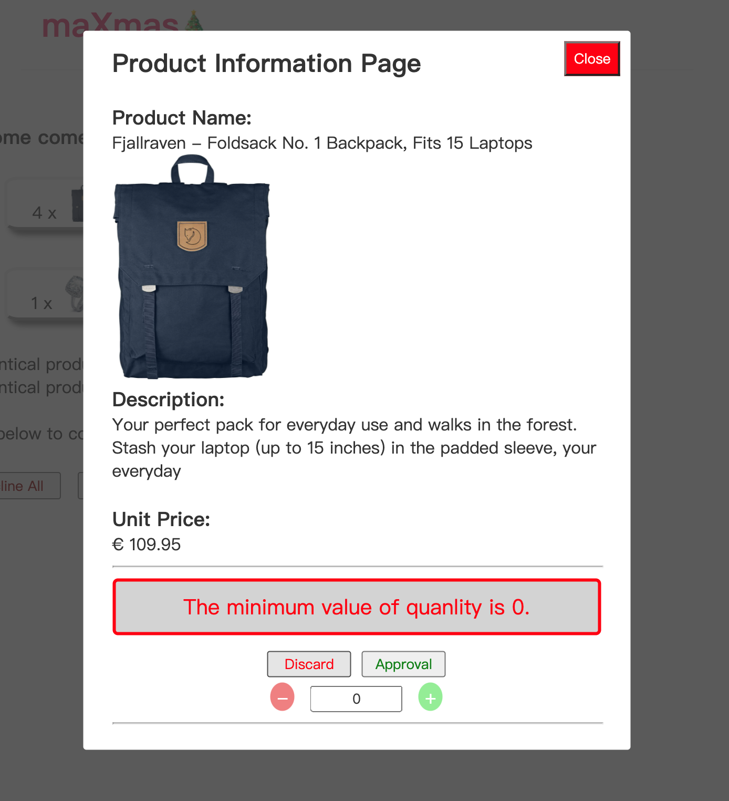

Visit the deployed website on:
https://lit-basin-99044.herokuapp.com/Enter correct username and password to enter the web page.
If a wrong username enter, a WARNING sign would appear for 5 seconds to remind the user to re-enter a correct credential.
When the user has a login to the website, the user would be directed to the selection page. On this page, the selected products with quantities would be displayed associated with the child information who made the selection as below.
The user could click each product box to view the details of the product with its price and change the quantities of the selected products on a popup box.
The quantities would be changed by clicking the + or - button. if the user keeps clicking the - button after the quantities have already reached 0, a WARNING sign would appear to remind the user, then it would disappear in 5 seconds.
Click the "Discard" button to set the quantity to zero
Click the "Approval" button to approve the selected quantity. The approved quantity would be adjusted accordingly on the selection page
After completing the approval process, click the "Close" button to close the popup box.
Return to the selection page, the adjusted quantities have been shown with each selected product.
The user would "Discard All" to set all the selected products to quantity zero or click "Approval All" to confirm selections
There is also a Cart button. by clicking the "Cart" button, the user would be redirected to the product billing page.
On the billing page, the user could review his/her final with a discount applied and a sum total of all the selected products.